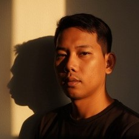

Dede Agustiar
Mahasiswa STTI Sony Sugema | Jurusan Teknik Informatika
dedeagustiar2@gmail.com
@dedeagustiar95
Biodata Diri
| Nama Lengkap | Dede Agustiar |
| Tempat/Tanggal Lahir | Karawang, 02 Agustus 1995 |
| Jenis Kelamin | Laki-laki |
| Alamat | Perum Garden City Residence, A2.14, Rt 006 Rw 013, Ds.Cengkong, Kec.Purwasari, Kab.Karawang |
| Agama | Islam |
Riwayat Pendidikan
- SMK INDUSTRI MANDIRI KARAWANG – Teknik Sepeda Motor (2013–2014)
- STTI SONY SUGEMA – Teknik Informatika (Semester 5)
Keahlian
- Desain Grafis (Canva)
- microsoft office(Word,Excel
“Teknologi bukan sekadar alat, tapi jembatan menuju masa depan.”